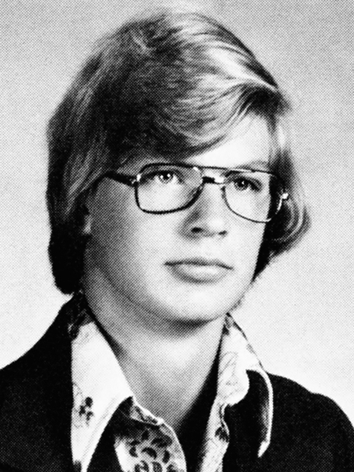
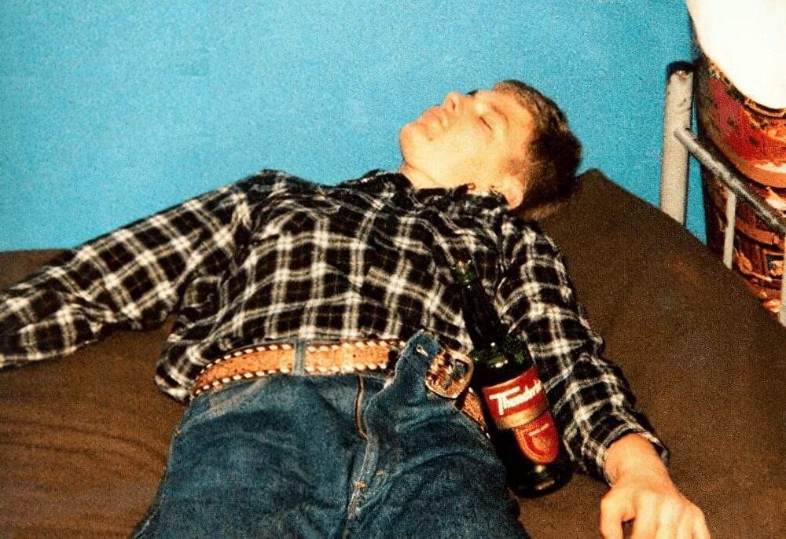

Jeffrey Lionel Dahmer; May 21, 1960 – November 28, 1994), also known as the Milwaukee Cannibal or the Milwaukee Monster, was an American serial killer and sex offender who killed and dismembered seventeen men and boys between 1978 and 1991. Many of his later murders involved necrophilia, cannibalism and the permanent preservation of body parts—typically all or part of the skeleton.
Although he was diagnosed with borderline personality disorder, schizotypal personality disorder, and a psychotic disorder, Dahmer was found to be legally sane at his trial. He was convicted of fifteen of the sixteen homicides he had committed in Wisconsin and was sentenced to fifteen terms of life imprisonment on February 17, 1992. Dahmer was later sentenced to a sixteenth term of life imprisonment for an additional homicide committed in Ohio in 1978.
On November 28, 1994, Dahmer was beaten to death by Christopher Scarver, a fellow inmate at the Columbia Correctional Institution in Portage, Wisconsin.
EARLY LIFE
Childhood: Jeffrey Lionel Dahmer was born on May 21, 1960, in Milwaukee, Wisconsin, the first of two sons to Lionel Herbert Dahmer, a Marquette University chemistry student and later a research chemist, and Joyce Annette Dahmer (née Flint), a teletype machine instructor. Lionel was of German and Welsh ancestry, and Joyce was of Norwegian and Irish ancestry.
Some sources report Dahmer was deprived of attention as an infant. Other sources, however, suggest that Dahmer was generally doted upon as an infant and toddler by both parents, although his mother was known to be tense, greedy for both attention and pity, and argumentative with her husband and their neighbors.
As Dahmer entered first grade, Lionel's studies kept him away from home much of the time. When he was home, his wife—a hypochondriac who suffered from depression—demanded constant attention and spent an increasing amount of time in bed. On one occasion, she attempted suicide using Equanil. Neither parent devoted much time to their son, who later recollected that, from an early age, he felt "unsure of the solidity of the family", recalling extreme tension and numerous arguments between his parents during his early years.
Dahmer had been an "energetic and happy child" but became notably subdued after undergoing double hernia surgery shortly before his fourth birthday. At elementary school, Dahmer was regarded as quiet and timid. One teacher recollected she detected early signs of abandonment due to his father's absence and mother's illnesses, the symptoms of which increased when she became pregnant with her second child. In elementary school, Dahmer had a small number of friends.
In October 1966, the family moved to Doylestown, Ohio. When Joyce gave birth in December, Dahmer was allowed to choose the name of his new baby brother; he chose the name David. The same year, Lionel earned his degree and started work as an analytical chemist in nearby Akron.
From an early age, Dahmer manifested an interest in dead animals. His fascination with dead animals may have begun when, at the age of four, he saw his father removing animal bones from beneath the family home. According to Lionel, Dahmer was "oddly thrilled" by the sound the bones made, and became preoccupied with animal bones, which he initially called his "fiddlesticks". He occasionally searched beneath and around the family home for additional bones, and explored the bodies of live animals to discover where their bones were located.
In May 1968, the family moved to Bath Township, Summit County, Ohio. This address was their third in two years, and the Dahmers' sixth address since marriage. The home stood in one and a half acres of woodland, with a small hut a short walk from the house where Dahmer began collecting large insects and the skeletons of small animals, such as chipmunks and squirrels. Some of these remains were preserved in jars of formaldehyde and stored within the hut.
Two years later, during a chicken dinner, Dahmer asked Lionel what would happen if the chicken bones were placed in bleach. Lionel, pleased by what he believed to be his son's scientific curiosity, demonstrated how to safely bleach and preserve animal bones. Dahmer incorporated these preserving techniques into his bone collecting. He also began collecting dead animals—including roadkill—which he would dissect and bury beside the hut, with the skulls occasionally placed atop makeshift crosses.
According to one friend, Dahmer explained that he was curious as to how animals "fit together". In one instance in 1975, Dahmer decapitated the carcass of a dog before nailing the body to a tree and impaling the skull upon a stick in the woodland behind his house. As a "prank", he later invited a friend to view the display, claiming he had discovered the remains by chance. The same year Lionel taught his son how to preserve animal bones, Joyce began increasing her daily consumption of Equanil, laxatives and sleeping pills, further increasing her emotional distance from her husband and children.
ADOLESCENCE AND HIGH SCHOOL

Dahmer, pictured in the 1978 Revere High School yearbook, Reverie
×
Dahmer had begun drinking beer and hard alcohol in the daylight hours, frequently concealing his liquor inside the jacket he wore to school. When a classmate asked why he was drinking Scotch in a morning history class, Dahmer shrugged and said the alcohol was "my medicine". Although largely uncommunicative, in his freshman year Dahmer was seen by staff as polite and highly intelligent, but earned only average grades. He was a competitive tennis player and played briefly in the high school band.
When he reached puberty, Dahmer discovered he was gay; he did not tell his parents. In his early teens, he had a brief relationship with another teenage boy, although they never had intercourse. By Dahmer's admission, he began fantasizing about dominating and controlling a completely submissive male partner in his early to mid-teens, and his masturbatory fantasies gradually evolved to his focusing on chests and torsos. These fantasies gradually became intertwined with dissection.
When he was about 16, Dahmer conceived a fantasy of rendering unconscious a particular male jogger he found attractive, and then making sexual use of his body. On one occasion, Dahmer concealed himself in bushes with a baseball bat to lie in wait for this man. However, the jogger did not pass by on that particular day. Dahmer later admitted this was his first attempt to attack and render an individual submissive to him.
Dahmer was known to his high school peers as a class clown who often staged pranks, which became known as "Doing a Dahmer"; these included bleating and simulating epileptic seizures or cerebral palsy at school and local stores. Occasionally, Dahmer would perform these antics for money to purchase alcohol.
By 1977, Dahmer's grades had declined. His parents hired a private tutor, with limited success. The same year, in an attempt to save their marriage, his parents attended counseling sessions. They continued to quarrel frequently. When Lionel discovered Joyce had engaged in a brief affair in September 1977, they decided to divorce, telling their sons they wished to do so amicably. The process of their divorce soon became increasingly bitter and acrimonious, and Lionel moved out of the house in early 1978, temporarily residing in a motel on North Cleveland Massillon Road.
In May 1978, Dahmer graduated from high school. A few weeks before his graduation, one of his teachers observed Dahmer sitting close to the school parking lot, drinking several cans of beer. When the teacher threatened to report the matter, Dahmer informed him he was experiencing "a lot of problems" at home and that the school's guidance counselor was aware of them. That spring, Joyce—contrary to a court order and without informing Lionel—moved out of the family home with David to live with relatives in Chippewa Falls, Wisconsin. Dahmer had just turned 18 and remained in the family home. Dahmer's parents' divorce was finalized on July 24, 1978. Joyce was awarded custody of their younger son and alimony payments.
LATE TEENS AND EARLY 20s
First Murder
Murder of Steven Hicks: Dahmer committed his first murder in 1978, three weeks after his graduation. On June 18, Dahmer picked up a hitchhiker named Steven Mark Hicks, who was 18 years old. Hicks, who had been hitchhiking to a rock concert at Chippewa Lake Park, agreed to accompany Dahmer to his house upon the promise of "a few beers" with Dahmer, who had the house to himself.
According to Dahmer, the sight of the bare-chested Hicks standing at the roadside stirred his sexual feelings, although when Hicks began talking about girls, he knew any sexual passes he made would be rebuffed. After several hours of talking, drinking and listening to music, Hicks "wanted to leave and I didn't want him to leave". Dahmer bludgeoned Hicks with a 10-pound (4.5 kg) dumbbell. He later stated he struck Hicks twice from behind with the dumbbell as Hicks sat upon a chair. When Hicks fell unconscious, Dahmer strangled him to death with the bar of the dumbbell, then stripped the clothes from Hicks' body before exploring his chest with his hands, then masturbating as he stood above the corpse. Hours later, Dahmer dragged the body to the basement.
The following day, Dahmer dissected Hicks' body in the basement. He later buried the remains in a shallow grave in his back yard. Several weeks later, he unearthed the remains and pared the flesh from the bones. He dissolved the flesh in acid before flushing the solution down the toilet; he crushed the bones with a sledgehammer and scattered them in the woodland behind the family home. He threw Hicks' necklace and the knife used to dismember him from the West Bath Road Bridge into the Cuyahoga River.
College and Army service
Six weeks after the murder of Hicks, Dahmer's father and his fiancée returned to his home, where they discovered Dahmer living alone. That August, Dahmer enrolled at Ohio State University (OSU), hoping to major in business. Dahmer's sole term at OSU was completely unproductive, largely because of his persistent alcohol abuse. He received failing grades in Introduction to Anthropology, Classical Civilizations, and Administrative Science. The only course Dahmer was successful at was Riflery, where he received a B− grade. His overall GPA was 0.45/4.0. On one occasion, Lionel paid a surprise visit to his son, only to find his dormitory room strewn with empty liquor bottles. Despite his father having paid in advance for the second term, Dahmer dropped out of OSU after just three months.
In January 1979, on his father's urging, Dahmer enlisted in the United States Army. He underwent basic training at Fort McClellan in Anniston, Alabama, before training as a medical specialist at Fort Sam Houston in San Antonio, Texas. He was occasionally reprimanded for intoxication while stationed at Fort Sam Houston. On one occasion, an instance of insubordination resulted in his entire platoon being punished, earning Dahmer a severe beating from his fellow recruits.
On July 13, 1979, Dahmer was deployed to Baumholder, West Germany, where he served as a combat medic in the 2nd Battalion, 68th Armored Regiment, 8th Infantry Division.[47][86] According to published reports, in Dahmer's first year of service, he was an "average or slightly above average" soldier.
Owing to Dahmer's alcohol abuse, his performance deteriorated, and, in March 1981, he was deemed unsuitable for military service and was later discharged from the Army. He received an honorable discharge, as his superiors did not believe that any problems Dahmer had in the Army would be applicable to civilian life.
On March 24, 1981, Dahmer was sent to Fort Jackson in South Carolina for debriefing and provided with a plane ticket to travel anywhere in the country. Dahmer later told police he felt he could not return home to face his father, so he opted to travel to Miami Beach, Florida, both because he was "tired of the cold" and in an attempt to live by his own means. In Florida, Dahmer found a job at a delicatessen and rented a room in a nearby motel. He spent most of his salary on alcohol and was soon evicted from the motel for non-payment. Dahmer initially spent his evenings on the beach as he continued to work at the sandwich shop until phoning his father and asking to return to Ohio in September of the same year.
xRETURN TO OHIO AND RELOCATION TO WEST ALLIS WISCONSIN
After his return to Ohio, Dahmer initially lived with his father and stepmother and insisted on being delegated numerous chores to occupy his time while he looked for work. He continued to drink heavily, and two weeks after his return, was arrested for drunk and disorderly conduct. He was fined $60 and given a suspended 10-day jail sentence. Dahmer's father tried unsuccessfully to wean his son off alcohol. In December 1981, he and his second wife sent him to live with his paternal grandmother, Catherine Dahmer, in West Allis, Wisconsin. As she was the only family member to whom Dahmer displayed any positivity or affection,[98] they hoped that both her influence and the change of location might persuade him to quit drinking, find a job, and live responsibly.
Initially, Dahmer's living arrangements with his grandmother were harmonious: he accompanied her to church, willingly undertook chores, actively sought work, and abided by most of her house rules (although he continued to drink and smoke). In early 1982, he found employment as a phlebotomist at the Milwaukee Blood Plasma Center. He held this job for a total of ten months before being laid off.[98] Dahmer remained unemployed for over two years, during which he lived upon whatever money his grandmother gave him.
Shortly before losing his job, Dahmer was arrested for indecent exposure. On August 8, 1982, at Wisconsin State Fair Park, he was observed exposing himself "on the south side of the Coliseum in which 25 people were present including women and children". For this incident, he was convicted and fined $50 plus court costs.

Dahmer, pictured in West Germany in 1979. His off-duty drinking caused him to be deemed unsuitable for military service in 1981.
In January 1985, Dahmer was hired as a mixer at the Milwaukee Ambrosia Chocolate Factory, where he worked from 11 p.m to 7 a.m. six nights per week, with Saturday evenings off. Shortly after he started this job, an incident occurred in which Dahmer was propositioned by another man while reading in the West Allis Public Library. The stranger threw Dahmer a note offering to perform fellatio upon him. Although Dahmer did not respond to this proposition, the incident stirred the fantasies of control and dominance he had developed as a teenager, and he began to familiarize himself with Milwaukee's gay bars, gay bathhouses, and bookstores. He also stole a male mannequin from a store, which he briefly used for sexual stimulation, until his grandmother discovered the item stowed in a closet and demanded that he discard it.
By late 1985, Dahmer had begun to regularly frequent the bathhouses, which he later described as being "relaxing places", but during his sexual encounters, he became frustrated at his partners' moving during the act. Following his arrest, he stated: "I trained myself to view people as objects of pleasure instead of [as] people". For this reason, beginning in June 1986, he administered sleeping pills to his partners, giving them liquor laced with sedatives. He then waited for his partner to fall asleep before performing various sexual acts. To maintain an adequate supply of this medication, Dahmer informed doctors he worked nights and required the tablets to adjust to that schedule. After approximately 12 such instances, the bathhouses' administration revoked Dahmer's membership, and he began to use hotel rooms to continue this practice.
Shortly after his bathhouse memberships were revoked, Dahmer read a report in a newspaper regarding the upcoming funeral of an 18-year-old male. He conceived the idea of stealing the freshly interred corpse and taking it home. According to Dahmer, he attempted to dig up the coffin from the ground but found the soil too hard and abandoned the plan.
On September 8, 1986, Dahmer was arrested upon a charge of lewd and lascivious behavior for masturbating in the presence of two 12-year-old boys as he stood close to the Kinnickinnic River. He initially claimed he had merely been urinating, unaware that there were witnesses, but soon admitted the offense. The charge was changed to disorderly conduct and, on March 10, 1987, Dahmer was sentenced to one year of probation, with additional instructions to undergo counseling.
LATE 20S AND EARLY 30S
Subsequent murders
Ambassador Hotel:On November 20, 1987, Dahmer, at the time still residing with his grandmother, encountered a 25-year-old man from Ontonagon, Michigan, named Steven Tuomi at a bar and persuaded him to return to the Ambassador Hotel in Milwaukee, where Dahmer had rented a room for the evening. According to Dahmer, he had no intention of killing Tuomi, but intended to simply drug him and lie beside him as he explored his body. The following morning, Dahmer awoke to find Tuomi lying beneath him on the bed, his chest "crushed in" and "black and blue" with bruises. Blood was seeping from the corner of his mouth, and Dahmer's fists and one forearm were extensively bruised. Dahmer later said he had no memory of having killed Tuomi, and that he "could not believe this had happened".
Dahmer purchased a large suitcase, in which he transported Tuomi's body to his grandmother's residence. One week later, he severed the head, arms, and legs, then filleted the bones from the body before cutting the flesh into pieces small enough to handle. Dahmer placed the flesh inside plastic garbage bags. He wrapped the bones inside a sheet and pounded them into splinters with a sledgehammer. The dismemberment process took Dahmer approximately two hours. He disposed of all of Tuomi's remains, excluding the head, in the trash.
For two weeks following Tuomi's killing, Dahmer retained Tuomi's head wrapped in a blanket. After two weeks, Dahmer boiled the head in a mixture of Soilax (an alkali-based industrial detergent) and bleach in an effort to retain the skull, which he then used as stimulus for masturbation. Eventually, the skull became too brittle by this bleaching process, so Dahmer pulverized and disposed of it.
Intermediate murders
According to Dahmer, Tuomi's murder was a pivotal incident after which he did not try to control his compulsions. He began to actively seek victims, most of whom he encountered in or around gay bars and would typically lure them to his grandmother's home. He would drug his victim with triazolam or temazepam before or shortly after engaging in sexual activity with them. Once his victim was unconscious, he strangled them to death.
Two months after the Tuomi killing, Dahmer encountered a 14-year-old Native American prostitute, James Doxtator. Dahmer lured him to his grandmother's residence with an offer of $50 to pose for nude pictures. They engaged in sexual activity before Dahmer drugged Doxtator and strangled him on the floor of the cellar. Dahmer left the body in the cellar for one week before dismembering it in much the same manner as he had with Tuomi. He placed all of Doxtator's remains (excluding the skull) in the trash. The skull was boiled and cleansed in bleach before Dahmer found that it, too, had been rendered brittle by the process. He pulverized the skull two weeks later.
On March 24, 1988, Dahmer met a 22-year-old bisexual man, Richard Guerrero, outside a gay bar called the Phoenix. Dahmer lured Guerrero to his grandmother's residence, offering him $50 to spend the night with him. He drugged Guerrero with sleeping pills, strangled him with a leather strap, and performed oral sex on the corpse. Dahmer dismembered Guerrero's body within 24 hours, again disposing of the remains in the trash and retaining the skull before pulverizing it several months later.
On April 2, Dahmer lured Ronald Flowers Jr. to his house; however, after giving Flowers a drugged coffee, both he and Flowers heard Dahmer's grandmother call, "Is that you, Jeff?" Although Dahmer replied in a manner that led his grandmother to believe he was alone, she observed that he was not alone. Because of this, Dahmer was unable to kill Flowers. After Flowers became unconscious, Dahmer took him to the County General Hospital.
In September 1988, Dahmer's grandmother asked him to move out, largely because of his drinking, his habit of bringing young men to her house late at night, and the foul smells emanating from the basement and the garage. Dahmer found a one-bedroom apartment at 808 North 24th Street and moved into the residence on September 25. Two days later, he was arrested for drugging and sexually fondling a 13-year-old boy whom he had lured to his home on the pretext of posing nude for photographs.
Dahmer's father hired attorney Gerald Boyle to defend his son. At Boyle's request, Dahmer underwent a series of psychological evaluations prior to his court hearings. The evaluations found that Dahmer harbored deep feelings of alienation. A second evaluation two months later revealed Dahmer to be an impulsive individual, suspicious of others, and dismayed by his lack of accomplishments in life. His probation officer also referenced a 1987 diagnosis of Dahmer suffering from a schizoid personality disorder for presentation to the court.
On January 30, 1989, Dahmer pleaded guilty to the charges of second-degree sexual assault and of enticing a child for immoral purposes. Sentencing was suspended until May. On March 20, Dahmer commenced a ten-day Easter absence from work, during which he moved back into his grandmother's home.
Two months after his conviction and two months prior to his sentencing, Dahmer murdered his fifth victim, a 24-year-old mixed-race aspiring model, Anthony Sears, whom he met at a gay bar on March 25, 1989. According to Dahmer, on this particular occasion he was not looking to commit a crime; however, shortly before closing time that evening, Sears "just started talking to me". Dahmer lured Sears to his grandmother's home, where the pair engaged in oral sex before Dahmer drugged and strangled Sears.
The following morning, Dahmer placed the corpse in his grandmother's bathtub, where he decapitated the body before attempting to flay the corpse.[6] He stripped the flesh from the body and pulverized the bones, which he disposed of in the trash. According to Dahmer, he found Sears "exceptionally attractive", and Sears was the first victim from whom he permanently retained any body parts: he preserved Sears' head and genitalia in acetone[145] and stored them in a wooden box, which he later placed in his work locker. When he moved to a new address the following year, he took the remains there.
On May 23, 1989, Dahmer was sentenced to five years' probation and one year in the House of Correction, with work release permitted so he could keep his job. He was also required to register as a sex offender. Two months before his scheduled release, Dahmer was paroled from this regimen. His five years' probation imposed in 1989 began at this point. Dahmer temporarily moved back to his grandmother's home in West Allis.
OXFORD APARTMENTS
1990 murders
On May 14, 1990, Dahmer moved out of his grandmother's house and into 924 North 25th Street, Apartment 213, taking Sears' mummified head and genitals with him. Although located in a high-crime area, Dahmer's new apartment was close to his workplace, was furnished, and at $300 per month inclusive of all bills excluding electricity, was economical. Within one week of his moving to this address, Dahmer killed his sixth victim, Raymond Smith. Smith was a 32-year-old prostitute whom Dahmer lured to his apartment with the promise of $50 for sex. Inside the apartment, he gave Smith a drink laced with seven sleeping pills, then manually strangled him.
The following day, Dahmer purchased a Polaroid camera, with which he took several pictures of Smith's body in suggestive positions before dismembering him in the bathroom. He boiled the legs, arms, and pelvis in a steel kettle with Soilax, which allowed him to rinse the bones in his sink. Dahmer dissolved the remainder of Smith's skeleton—excluding the skull—in a container filled with acid. He later spray-painted Smith's skull, which he placed alongside the skull of Sears upon a black towel inside a filing cabinet.
Approximately one week after the murder of Smith, on or about May 27, Dahmer lured another young man to his apartment. On this occasion, Dahmer accidentally consumed the drink laden with sedatives intended for his guest. When he awoke the following day, he discovered the man had stolen several items of clothing, $300 and a watch. Dahmer never reported this incident to the police, although on May 29, he divulged to his probation officer that he had been robbed.
In June 1990, Dahmer lured a 27-year-old acquaintance, Edward Smith, to his apartment, where he drugged and strangled him. On this occasion, rather than immediately acidifying the skeleton or repeating previous processes of bleaching, which had rendered previous victims' skulls brittle, Dahmer placed Smith's skeleton in his freezer for several months in the hope it would not retain moisture. Freezing the skeleton did not remove moisture, and the skeleton of this victim was acidified several months later. Dahmer accidentally destroyed the skull when he placed it in the oven to dry—a process that caused the skull to explode. Dahmer later informed police he had felt "rotten" about Smith's murder, as he had been unable to retain any parts of his body.
Less than three months after the murder of Edward Smith, Dahmer encountered a 22-year-old Chicago native named Ernest Miller outside a bookstore on the corner of North 27th Street. Miller agreed to accompany Dahmer to his apartment for $50 and further agreed to allow him to listen to his heart and stomach. When Dahmer attempted to perform oral sex upon Miller, he was informed, "That'll cost you extra", whereupon Dahmer gave Miller a drink laced with two sleeping pills.
On this occasion, Dahmer had only two sleeping pills to give his victim. Therefore, he killed Miller by slashing his carotid artery with the same knife he used to dissect his victims' bodies. Miller bled to death within minutes. Dahmer then posed the nude body for various suggestive Polaroid photographs before placing it in his bathtub for dismemberment. Dahmer repeatedly kissed and talked to the severed head while he dismembered the remainder of the body.
Dahmer wrapped Miller's heart, liver, biceps, and portions of flesh from the legs in plastic bags and placed them in the freezer for later consumption. He boiled the remaining flesh and organs into a "jelly-like substance" using Soilax, which enabled him to rinse the flesh off the skeleton, which he intended to retain. To preserve the skeleton, Dahmer placed the bones in a light bleach solution for 24 hours before allowing them to dry upon a cloth for one week. The severed head was initially placed in the refrigerator before being stripped of flesh, then painted and coated with enamel.
Three weeks after the murder of Miller, on September 24, Dahmer encountered a 22-year-old father of two named David Thomas at the Grand Avenue Mall. He persuaded him to return to his apartment for a few drinks, with additional money on offer if he would pose for photographs. In his statement to police after his arrest, Dahmer said that, after giving Thomas a drink laden with sedatives, he did not feel attracted to him, but was afraid to allow him to awaken, fearing that he would be angry over having been drugged. Therefore, he strangled him and dismembered the body—intentionally retaining no body parts whatsoever. He photographed the dismemberment process and retained these photographs, which later aided in Thomas's identification.
Following the murder of Thomas, Dahmer did not kill anyone for almost five months, although on a minimum of five occasions between October 1990 and February 1991, he unsuccessfully attempted to lure men to his apartment. He regularly complained of feelings of both anxiety and depression to his probation officer throughout 1990, with frequent references to his sexuality, his solitary lifestyle, financial difficulties, and—shortly before Thanksgiving—his apprehension regarding meeting and facing his father and younger brother. On several occasions, Dahmer also referred to harboring suicidal thoughts.
KONERAK SINTHASO
On the afternoon of May 26, 1991, Dahmer encountered a 14-year-old Lao teenager, Konerak Sinthasomphone, on Wisconsin Avenue. Unknown to Dahmer, Sinthasomphone was the younger brother of the boy he had molested in 1988. Dahmer offered Sinthasomphone money to accompany him to his apartment to pose for Polaroid pictures. According to Dahmer, Sinthasomphone was initially reluctant to the proposal, before changing his mind and accompanying him to his apartment, where he posed for two pictures in his underwear before Dahmer drugged him into unconsciousness and performed oral sex on him. Before Sinthasomphone fell unconscious, Dahmer led the boy into his bedroom, where the body of Tony Hughes, whom Dahmer had killed three days earlier, lay naked on the floor. According to Dahmer, he "believed [that Sinthasomphone] saw this body" yet did not react to seeing the bloated corpse—likely because of the effects of the sleeping pills he had ingested.
On this occasion, Dahmer drilled a single narrow hole into the crown of Sinthasomphone's skull, through which he injected hydrochloric acid into the frontal lobe. Dahmer then drank several beers while lying alongside Sinthasomphone before briefly falling asleep, then leaving his apartment to drink at a bar and purchase more alcohol.
In the early morning hours of May 27, Dahmer returned toward his apartment to discover Sinthasomphone sitting naked on the corner of 25th and State, talking in Lao, with three distressed young women standing near him. Dahmer approached the women and told them that Sinthasomphone (whom he referred to by the alias John Hmong) was his friend, and attempted to lead him to his apartment by the arm. The three women dissuaded Dahmer, explaining they had phoned 9-1-1.
Upon the arrival of two Milwaukee police officers, John Balcerzak and Joseph Gabrish, Dahmer's demeanor relaxed: he told the officers that Sinthasomphone was his 19-year-old boyfriend, that he had drunk too much following a quarrel, and that he frequently behaved in this manner when intoxicated. Dahmer added his lover had consumed Jack Daniel's whiskey that evening.
The three women were exasperated, and when one of the trio attempted to indicate to one of the officers—both of whom had observed no injuries beyond a scrape to Sinthasomphone's knee and believed him to be intoxicated—that Sinthasomphone had blood upon his testicles, was bleeding from his rectum and that he had seemingly struggled against Dahmer's attempts to walk him to his apartment prior to their arrival, the officer harshly informed her to "butt out", "shut the hell up" and to not interfere.
Shortly after the arrival of the Milwaukee police officers, three members of the Milwaukee Fire Department arrived at the scene. These individuals also examined Sinthasomphone for injuries and provided a yellow blanket for the police officers to cover Sinthasomphone. One of the three believed Sinthasomphone needed treatment, but the police officers directed the fire department personnel to leave. Shortly thereafter, officer Richard Porubcan arrived at the scene. He and Gabrish—followed by Balcerzak—escorted Dahmer and Sinthasomphone to Dahmer's apartment as Dahmer repeatedly commented on the general crime in the neighborhood and of his appreciation of the police.
Inside his apartment and in an effort to verify his claim that he and Sinthasomphone were lovers, Dahmer showed the officers the two semi-nude Polaroid pictures he had taken of Sinthasomphone the previous evening. Though Balcerzak said he smelled nothing unusual, Gabrish later stated he noted a strange scent reminiscent of excrement inside the apartment. This odor emanated from the decomposing body of Hughes. Dahmer stated that to investigate this odor, one officer simply "peeked his head around the bedroom, but really didn't take a good look". The officers then left, with a departing remark that Dahmer "take good care" of Sinthasomphone. This incident was listed by the officers as a "domestic dispute".
Upon the departure of the three officers from his apartment, Dahmer again injected hydrochloric acid into Sinthasomphone's brain. This second injection proved fatal. The following day, May 28, Dahmer took a day's leave from work to devote himself to the dismemberment of the bodies of Sinthasomphone and Hughes. He retained both victims' skulls.
On June 30, Dahmer traveled to Chicago, where he encountered a 20-year-old named Matt Turner at a bus station. Turner accepted Dahmer's offer to travel to Milwaukee for a professional photo shoot. At the apartment, Dahmer drugged, strangled and dismembered Turner and placed his head and internal organs in separate plastic bags in the freezer. Turner was not reported missing. Five days later, on July 5, Dahmer lured 23-year-old Jeremiah Weinberger from a Chicago bar to his apartment on the promise of spending the weekend with him. He drugged Weinberger and twice injected boiling water through his skull, sending him into a coma from which he died two days later.
On July 15, Dahmer encountered 24-year-old Oliver Lacy at the corner of 27th and Kilbourn. Lacy agreed to Dahmer's ruse of posing nude for photographs and accompanied him to his apartment, where the pair engaged in tentative sexual activity before Dahmer drugged Lacy. On this occasion, Dahmer intended to prolong the time he spent with Lacy while alive. After unsuccessfully attempting to render Lacy unconscious with chloroform, he phoned his workplace to request a day's absence; this was granted, although the next day, he was suspended.
After strangling Lacy, Dahmer had sex with the corpse before dismembering him. He placed Lacy's head and heart in the refrigerator and his skeleton in the freezer. Four days later, on July 19, Dahmer received word that he was dismissed. Upon receipt of this news, Dahmer lured 25-year-old Joseph Bradehoft to his apartment. Bradehoft was strangled and left lying on Dahmer's bed covered with a sheet for two days. On July 21, Dahmer removed the sheet to find the head covered in maggots. He decapitated the body, cleaned the head and placed it in the refrigerator. He later acidified Bradehoft's torso, along with those of two other victims killed within the previous month.